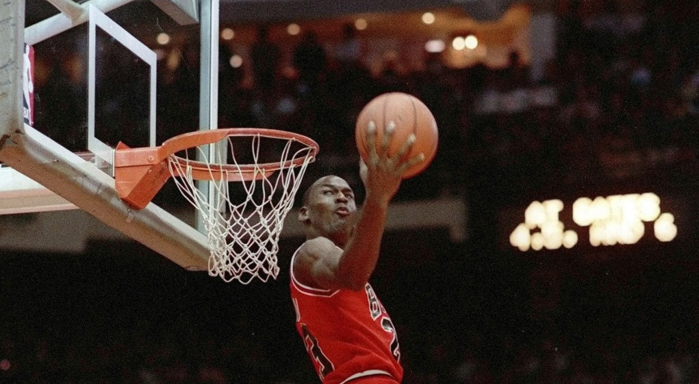

The Midas Touch:
What is the on-court impact of salary within the NBA?

This project aims to determine whether NBA franchises are allocating their salary caps effectively in order to achieve better playoff performance and win titles. The motivation of this question is illustrated by chart one, showing that basketball is an outlier in how many highly valuable stars the NBA contains compared to other sports.
Furthermore, chart two demonstrates that whilst many NBA players are amongst the world’s highest paid athletes, the vast majority of players are paid far less. This begs the question, does this practice of significant spending on few stars lead to better playoff performance? The third chart seems to suggest such, showing that even when adjusting for inflation and increased league revenue, teams are spending more of their revenue on player salaries in recent years. The answer to these questions both shed light on the efficiency of fiscal decision making within the NBA, and also provide answers of how salary rule composition within the NBA influence on-court outcomes.
Data Used
For the primary data sources, two scraper scripts were constructed in Python: one for scraping data between 2013-2021 and another for current season data. In the case of the 2013-21 scraper, a for loop was utilised to maximise efficiency in gathering data across multiple years, combining basic and advanced statistics from Basketball-Reference with salary data from HoopsHype. This approach can be replicated to scrape data from additional years up to the earliest data is published. The 2023 scraper has been separated from the former scraper in order to allow data to be updated periodically in response to new games this season, which feeds through to the linear regression models and provides up-to-date playoff predictions.
Challenges in cleaning data
The most significant cleaning challenge was merging data from Basketball-Reference and HoopsHype. The two sites used differing team names, one shortened. In order to overcome this, I defined a list of full team names and replaced the shortened team names with the full team names, based on how similar the shortened 2 team name strings were to string entries in the full team name list. For this, I used the SequenceMatcher method from the difflib package (I found through trial and error that a similarity of 53% ensured correct matching of names without causing incorrect matches). Secondly, player naming conventions differed between datasets, causing hundreds of rows being dropped during merging of player and player salary data. To combat this, I created two lists of player name strings that were not found in both datasets (player_diff_1 and player_diff_2). Through browsing this list, I found common naming convention. I corrected this by using if statements. For remaining misnamed players, I was forced to correct these names manually using the .replace() method. This method ensures automation is maintained when data from new games is scraped. There was also an issue with accented characters in player names causing errors, which was corrected by applying a unidecode function to all rows in the player name column.
Conclusions
Considering chart four, we can see that out of all measurable game statistics, overall shooting efficiency ratings (such as TS% and eFG%) and margin of victory indicators (SRS, MOV) are the best indicators of a team’s success in the playoffs (P_W). However, team payrolls (Pay) are only somewhat correlated with efficiency ratings, and extremely uncorrelated with both margin of victory indicators and playoff performance. In short, teams within the modern NBA that spend more do not win more
Utilising a linear regression model, we can see that this season there seems to be a much more correlated relationship between payroll and predicted playoff performance, with a correlation of .53 (compared to a correlation of .13 historically). I hypothesise this change in relationship is as a result of teams with spare salary-cap space ‘tanking’ (i.e. losing on purpose) in order to achieve better odds in the draft lottery for generational prospect Victor Wembanyama – this type of opportunity has not occurred within our dataset before.
Chart six breaks down player-level relationships this season. Here we can see that player salary (pay) is far more correlated with highly observable characteristics – points and free-throws, rather than factors we observed were correlated with playoff performance in chart 4 – inferring that ‘flashier’ players out-earn players that actually generate winning potential.
Chart seven shows us that on a player level, this season higher paid salaries typically underperform relative to their salary compared to their lower-paid peers...
In combination, the charts tell a story that franchises pay for highly observable characteristics in their stars over efficient players – as such leading to little relationship between spending and wins. The exception to this rule this season may be a result of teams losing on purpose with hopes of drafting a guaranteed future star. Such a hypothesis would need to be tested by examining past years of similar draft prospects, such as LeBron James.